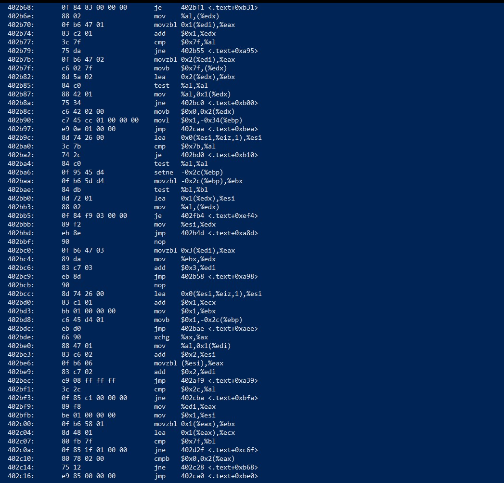
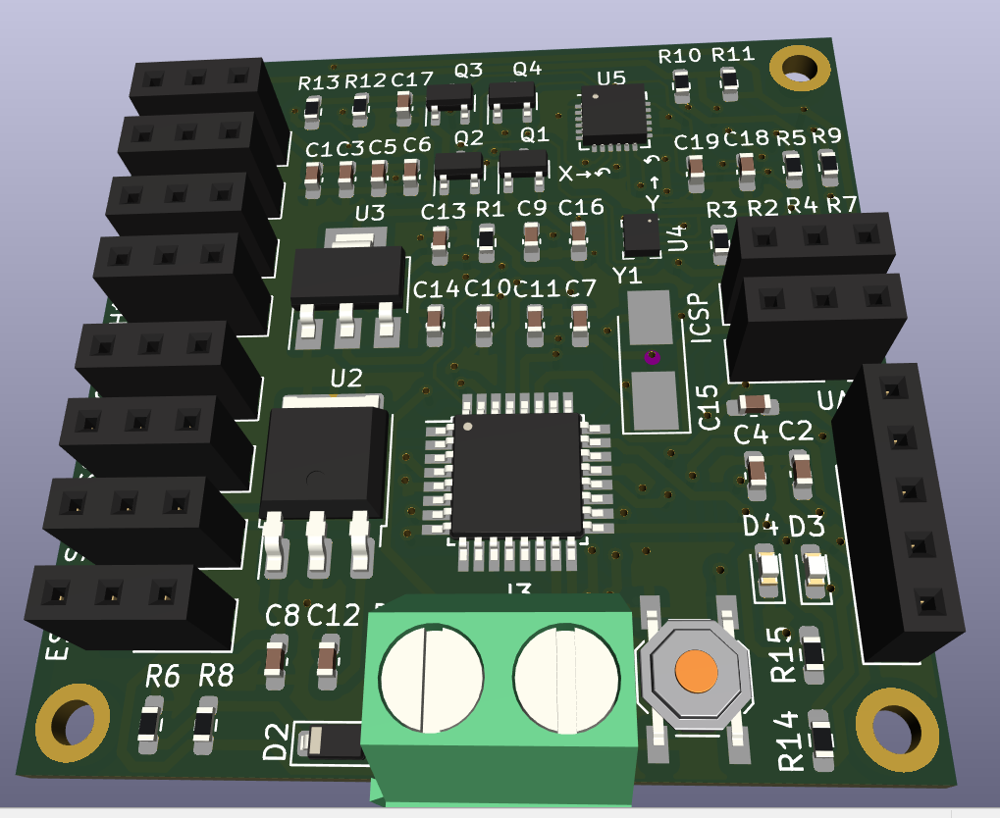

|
Hello üëã I'm Syeed Mohd Ameen I hold a Bachelor of Technology degree in Computer Science and Engineering from Rajasthan Technical University, Kota, and a Master of Technology degree from Aligarh Muslim University, Aligarh. During my master's program, I focused my research efforts on the development of an "Energy-Efficient Heterogeneous Multi-core Architecture for Edge Computing Devices." This dissertation was conducted under the guidance of Dr. Abdus Samad. |
Research IntrestI'm interested in Computer Security, Brain Computer Interface, Computer Architecture, Parallel Computation, Embedded System, Energy-Efficient Computation, Mathematical Optimization, and Machine Learning. Much of my research is to intelligently use of Microcontrollers to improve some existing system and design efficient firmware for ESP32, nrf52xx, stm32, avr base SOC. Under working projects are highlighted . |
|
|
AT89S52: A SPI Programmer that can program AT89Sxx series of Microcontrollers
Existing programmers of AT89Sxx series of IC's are costly and very messy to use, so we design and develop a simple easy to use programmer that can program AT89Sxx Series of IC's. (simple drag and drop hex file in serial terminal program) |
|
|
8051 FPU: Fast Floating Point Subrountines support for 8051 Microcontroller
"Fast Floating Point Subroutines" meticulously designed to empower the 8051 microcontroller with robust IEEE 754 floating-point arithmetic capabilities. Elevating the computational prowess of the 8051, our subroutines enable high-speed, precise floating-point calculations in resource-constrained environments. |
|
|
Smart City Integration using google voice kit
Hasan Shaikh, Gulshan Kumar Sharma, Syeed Mohd Ameen Prof. Mohammad Sarosh Umar, Mr. Muneeb Hasan Khan Spring, 2022 ‚Ä¢ Designed and implemented web-based online smart city monitoring system that integrated with various kind of sensors and detection systems ‚Ä¢ Designed the database and dependencies using MySQL that were required as the back-end of the application. I am specially working on google voice kit that used to broadcast the voice message üîä |
|

|
hass: High level Assembler for MCS-51 Isntruction Set Architecture
Yunus Kathat, Syeed Mohd Ameen, Dr. Shaiy singh HASS (High-Level Assembler for MCS-51 Instruction Set Architecture). Developed by a collaborative team comprising Yunus Kathat, Syeed Mohd Ameen, and guided by Dr. Shaiy Singh, HASS revolutionizes the way we program the MCS-51 microcontroller by seamlessly incorporating custom complex instructions that were previously unavailable in the MCS-51 ISA. |
|
|
Micro6502: A 6502 Microprocessor based computer
8-bit Computer for Education purposes. 6502 Microprocessor based computer (An Upgraded version of Apple ][) my plan to buid this computer is to enchaned the assembly language programming and Microprocessor skill. Features |
 
|
LRV32I: A RISCV based R32I microcontroller for low power applications
Dr. Abdus Samad, Syeed Mohd Ameen A ultra low power RISCV RV32I ISA based microcontroller for low power application. Microprocessor implemented on FPGAs, In order to test the relative performance and power consumption results. |
|
|
nECG: Low cost smart nano ECG measurement device
Hasan Shaikh, Prof. Abdus Samad, Syeed Mohd Ameen The primary objective of the project is to create a compact and affordable ECG measurement device that maintains accuracy and reliability comparable to traditional medical-grade ECG machines. By leveraging advancements in nano-scale technology, the nECG device aims to be highly portable and easy to use, making it accessible for a broader range of users. |
|

|
milliflight: Budget Flight Controller for Drones with ATmega328P Microcontroller
A budget flight controller for drones using the ATmega328P microcontroller offers an affordable yet efficient solution for controlling the flight dynamics of drones. Designed with cost-effectiveness in mind, this flight controller provides the essential features required for stable flight control while utilizing the capabilities of the ATmega328P microcontroller. |
|
Feel free to use this website source code. |